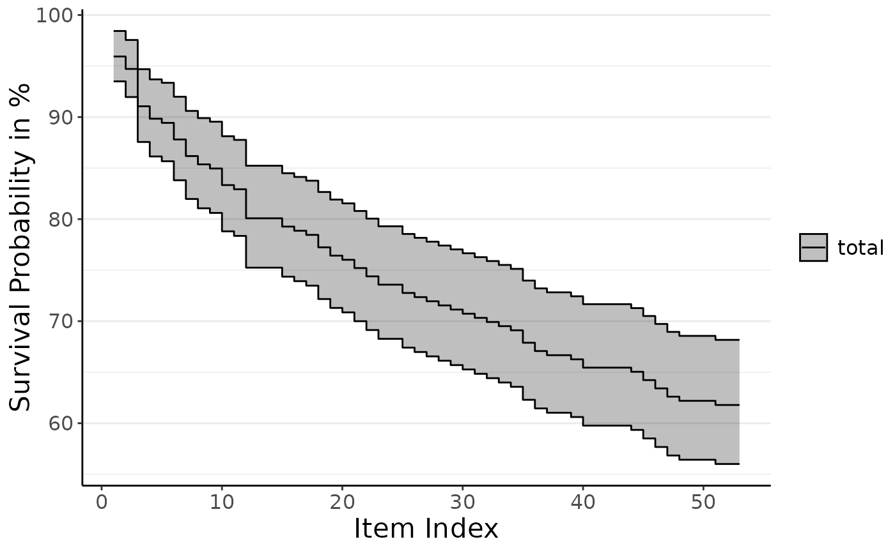
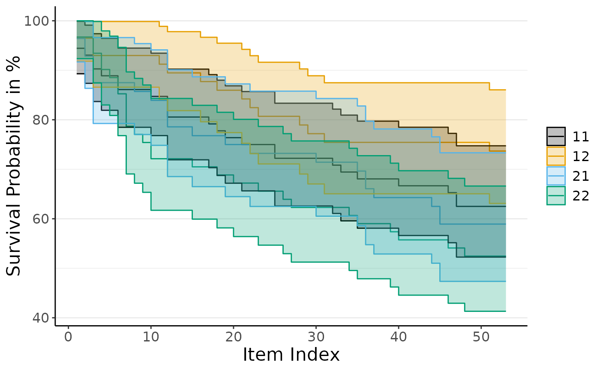

The plot_do_kpm function generates a Kaplan-Meier survival plot based on the
output from the do_kpm() function. It allows for customization of conditions
to display, confidence intervals, color palettes, and y-axis scaling.
Usage
plot_do_kpm(
kds,
sel_conds = c("11", "12", "21", "22"),
kpm_ci = TRUE,
full_scale_kpm = FALSE,
color_palette_kp = "color_blind"
)Arguments
- kds
list object as modeled by
do_kpm()- sel_conds
character Which experimental conditions to plot.
- kpm_ci
boolean Should there be confidence bands in the plot? Defaults to TRUE.
- full_scale_kpm
boolean Should the Y axis show the full range from 0 to 100? Defaults to FALSE.
- color_palette_kp
character indicating which color palette to use. Defaults to 'color_blind', alternatively choose 'gray' for gray scale values or 'default' for the ggplot2 default colors.
Value
Returns a ggplot object containing the Kaplan-Meier survival plot. Using the Shiny App version of
dropR, this plot can easily be downloaded in different formats.
Examples
plot_do_kpm(do_kpm(d = add_dropout_idx(dropRdemo, 3:54),
condition_col = "experimental_condition",
model_fit = "total"))

plot_do_kpm(do_kpm(d = add_dropout_idx(dropRdemo, 3:54),
condition_col = "experimental_condition",
model_fit = "conditions"), sel_conds = c("11", "12", "21", "22"))
